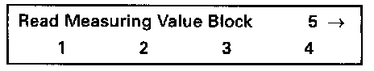
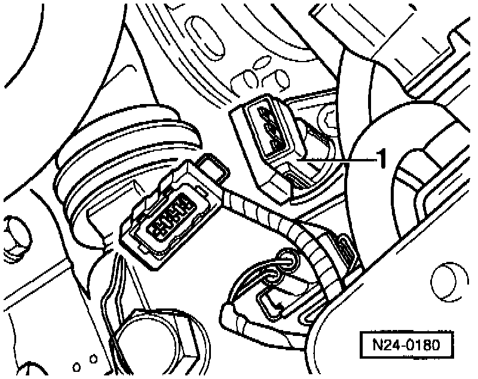
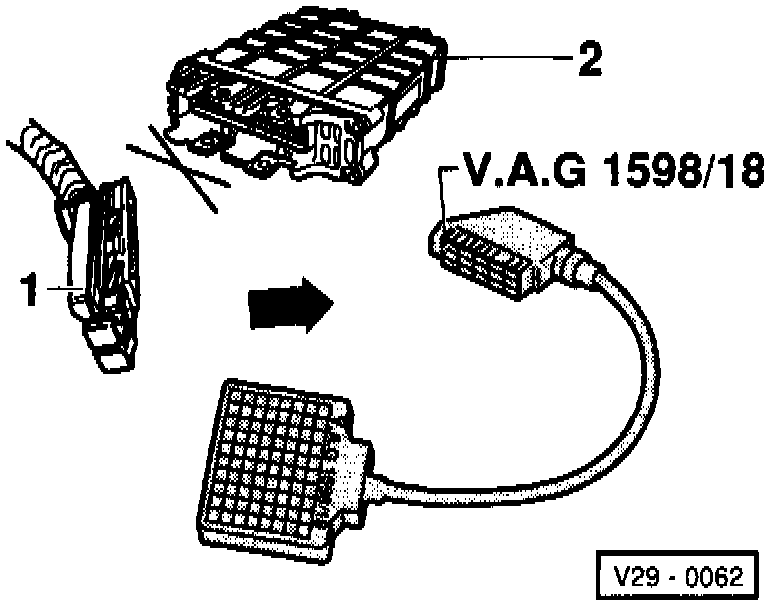

Vehicle Speed Sensor: Testing and Inspection
Special tools, testers and auxiliary items:- VAG 1551/1552 scan tool with VAG 1551/3 adapter cable.
- Multimeter (Fluke 83 or equivalent).
- Connector test kit VW 1594.
- Wiring diagram.
Test conditions:
- Speedometer OK.
NOTE:
To check the vehicle speed sensor signal, vehicle must be test driven. To do this a second technician is necessary.
Test sequence:
- Engine running at idle.
- Connect VAG 1551/1552 scan tool and select "Engine Electronics" address word 01. Testing and Inspection

Indicated on display
- Press buttons -0- and -8- to select "Read Measuring Value Block" function 08 and press -Q- button to confirm input.

Indicated on display
- Press buttons -0-, -0- and -5- to input display group 005 and press -Q- button to confirm input.

Indicated on display (1-4 = Display fields)
- Perform test drive and observe display in display field 3 (second technician necessary).

- Press -> button.
- Press buttons -0- and -6- to select "End Output" function 06 and press -Q- button to confirm input.
- Switch ignition off.
Continuation:
If no speed is indicated:

- Disconnect 3-pin connector from vehicle speed sensor -1-.
- Switch ignition on.

- Connect multimeter using test leads from VW 1594 to measure voltage at terminals 1 and 3 of connector.
Specification: 9-14.5 volts.
- Switch ignition off.
- Reconnect connector.
If no voltage was present:
- Check wiring according to wiring diagram.
If voltage was 9-14.5 volts:

- Connect VAG 1598/18 test box to ECM wiring harness (arrow).
- Check wiring between central electrical panel and test box socket 65 for open circuit according to wiring diagram.
Resistance: max. 1.5 ohms.
- Connect multimeter using test leads from VW 1594 to measure voltage at test box sockets 56 and 65.
- Switch ignition on.
- Lift left front wheel and rotate by hand or push vehicle.
- The voltage must fluctuate between 0 and at least 4 volts.
If no wiring malfunction is detected and voltage was present between terminals 1 and 3:
- Replace speedometer Vehicle Speed Sensor (VSS) -G22-.
- Read the readiness code. If DTC memory has been erased, verify repair via appropriate display group See Readiness code, creating. Testing and Inspection